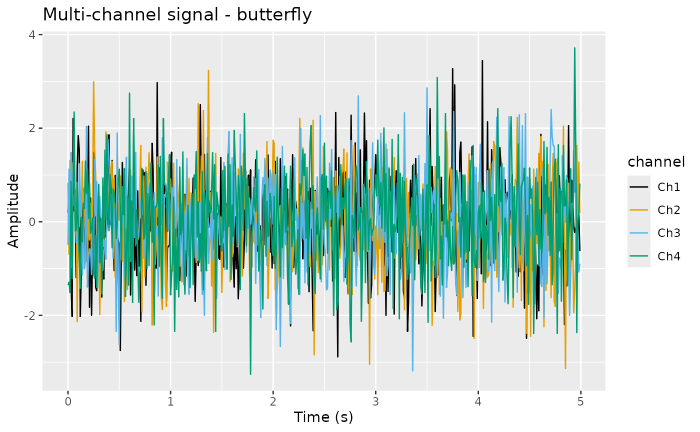
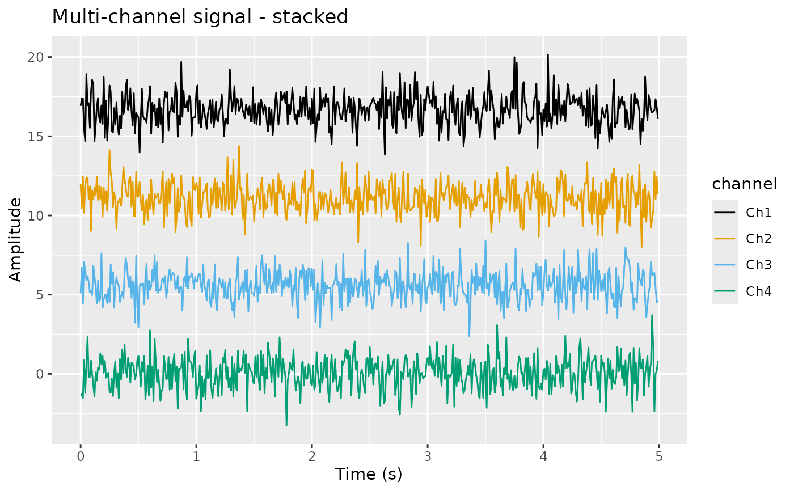
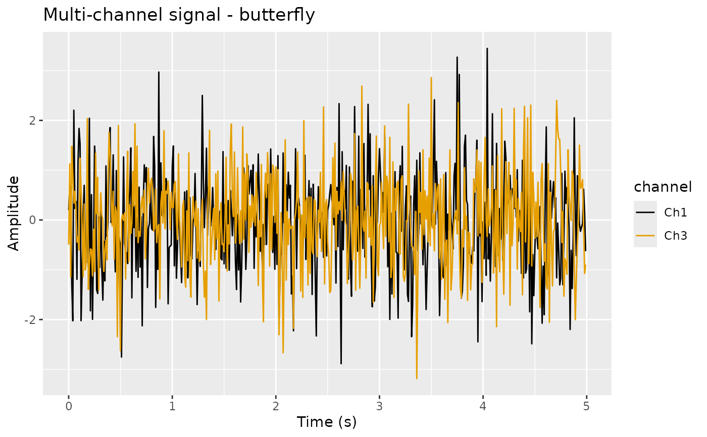

Functions for visualizing multiple channels simultaneously. Plot multiple channels (butterfly or stacked)
Usage
plotMultiChannel(
x,
channels = NULL,
sample = 1L,
style = c("butterfly", "stacked"),
offset = NULL,
assay_name = NULL,
colors = NULL
)Arguments
- x
A PhysioExperiment object.
- channels
Integer vector of channel indices to plot. If NULL, plots all.
- sample
Integer index for the sample (for 3D data).
- style
Plot style: "butterfly" (overlaid) or "stacked" (offset).
- offset
Numeric offset between channels for stacked plot.
- assay_name
Optional assay name. If NULL, uses the default assay.
- colors
Optional color vector for channels.
References
Wickham, H. (2016). ggplot2: Elegant Graphics for Data Analysis. Springer-Verlag New York. doi:10.1007/978-3-319-24277-4
Delorme, A. & Makeig, S. (2004). "EEGLAB: an open source toolbox for analysis of single-trial EEG dynamics including independent component analysis." Journal of Neuroscience Methods, 134(1), 9-21. doi:10.1016/j.jneumeth.2003.10.009
See also
plotSignal() for single-channel plots, plotERP() for
event-related potential plots, plotTopomap() for topographic
visualization.
Examples
# Create example data
pe <- PhysioExperiment(
assays = list(raw = matrix(rnorm(500 * 4), nrow = 500)),
colData = S4Vectors::DataFrame(label = c("Fz", "Cz", "Pz", "Oz")),
samplingRate = 100
)
# Butterfly plot (all channels overlaid)
plotMultiChannel(pe, style = "butterfly")

# Stacked plot (channels offset vertically)
plotMultiChannel(pe, style = "stacked")

# Plot specific channels
plotMultiChannel(pe, channels = c(1, 3), style = "butterfly")
